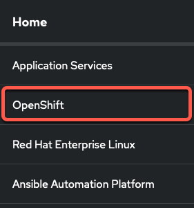
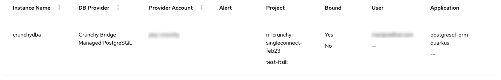

Exploring Red Hat OpenShift Database Access
You can discover which database instance is connected to an application, along with other information by viewing the database inventory page.
Prerequisites
-
Already logged into the Red Hat Hybrid Cloud Console.
-
Access to the OpenShift Cluster Manager (OCM) console.
Procedure . Log into the Red Hat Hybrid Cloud Console with your credentials.
+ image::rhoda_console_login_screen.png[Red Hat Hybrid Cloud Console login page]
-
Click OpenShift from the navigation menu.
 -
From the Clusters page, click on a cluster name from the list of available clusters.
-
Click the Open console button, and provide your account credentials.
-
From the OpenShift Cluster Manager console, change to the Administrator perspective.
-
From the Project drop-down, select the redhat-dbaas-operator project.
-
Expand the Data Services, and click on Database Access from the navigation menu.

-
Viewing the inventory table you can find which database instance is connected to an application. You can also view the database provider, the provider account resource, and the associated project name.
Figure 1. Example
Explore using CLI by using below commands
oc get catalogsources -n openshift-marketplace NAME DISPLAY TYPE PUBLISHER AGE ccapi-k8s-catalogsource CockroachDB Cloud Operator grpc 27h certified-operators Certified Operators grpc Red Hat 5d8h community-operators Community Operators grpc Red Hat 5d8h crunchy-bridge-catalogsource Crunchy Bridge Operator grpc 27h dbaas-operator DBaaS Operator grpc 27h mongodb-atlas-catalogsource MongoDB Atlas Operator grpc 27h redhat-marketplace Red Hat Marketplace grpc Red Hat 5d8h redhat-operators Red Hat Operators grpc Red Hat 5d8h
oc get catalogsource dbaas-operator -n openshift-marketplace NAME DISPLAY TYPE PUBLISHER AGE dbaas-operator DBaaS Operator grpc 27h
oc get subs -n openshift-dbaas-operator NAME PACKAGE SOURCE CHANNEL ccapi-k8s-subscription ccapi-k8s-operator ccapi-k8s-catalogsource alpha crunchy-bridge-subscription crunchy-bridge-operator crunchy-bridge-catalogsource alpha dbaas-operator dbaas-operator dbaas-operator alpha mongodb-atlas-subscription mongodb-atlas-kubernetes mongodb-atlas-catalogsource beta rh-service-binding-operator-stable-redhat-operators-openshift-marketplace rh-service-binding-operator redhat-operators stable
oc get sub dbaas-operator -n openshift-dbaas-operator NAME PACKAGE SOURCE CHANNEL dbaas-operator dbaas-operator dbaas-operator alpha